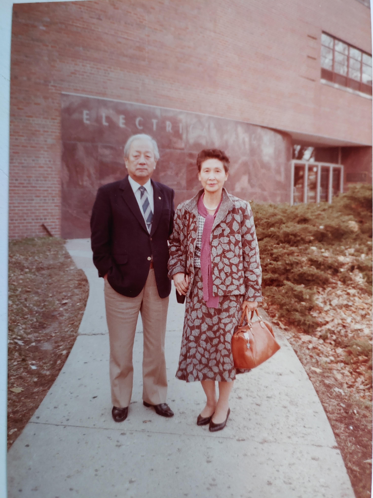
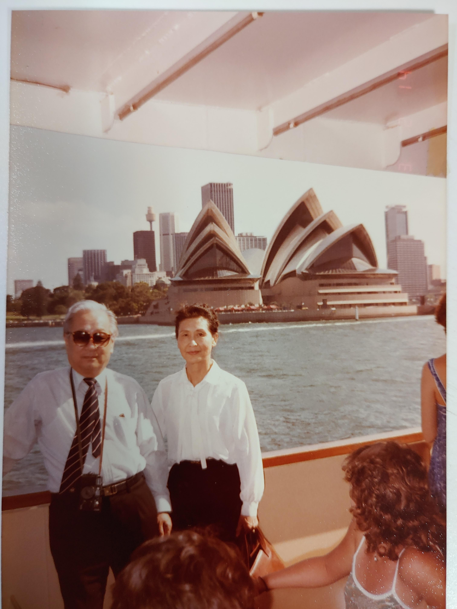
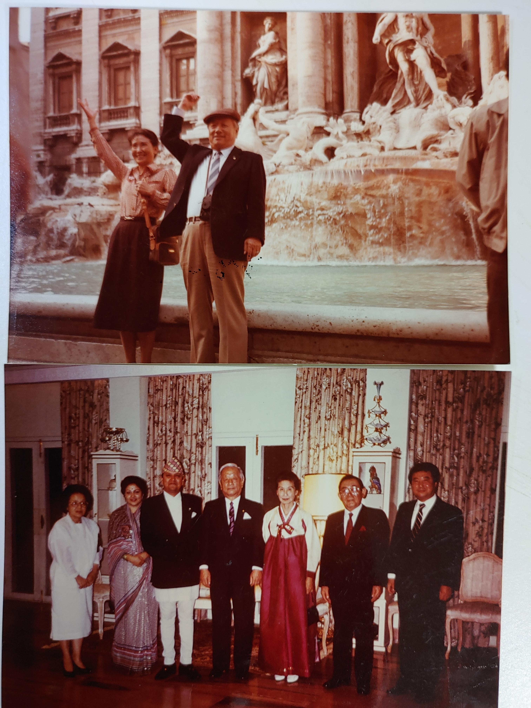
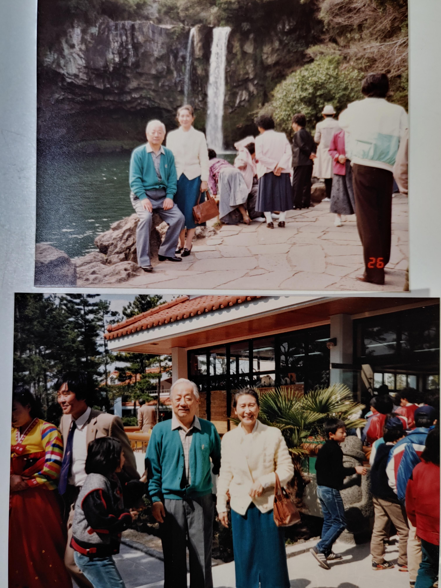
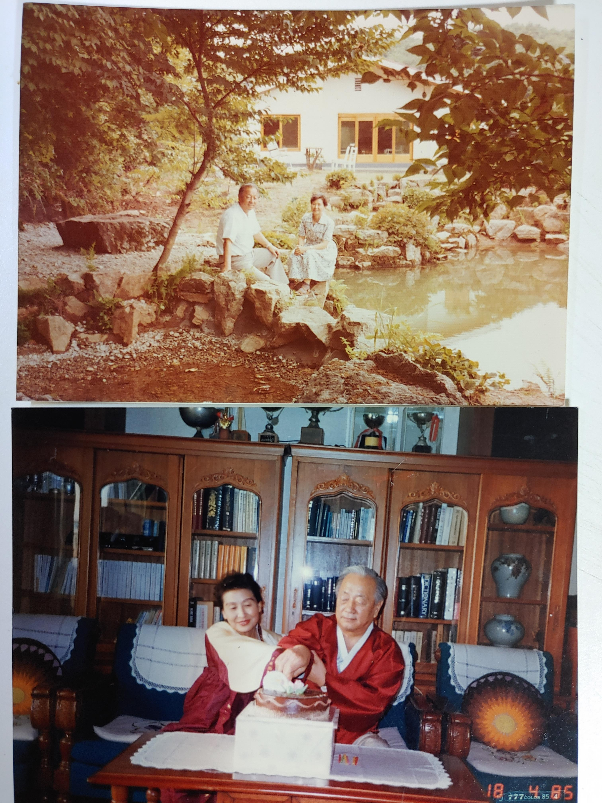

1984년경 아버지께서 내가 유학하고 있었던 Iowa State University 의 Coover Hall (Electrical and Computer Engineering)을방문하셨다. 당시 시카고총영사관에 근무하던 이수택-인경부부가 올스모빌 새차몰고 부모님을 우리집까지 모시고왔던듯 하다. 대학아파트(Schuletter village)에서 주무셨던듯. 유학생교회 에임스감리교회의 노목사님을 초대하여 저녁식사를 함께하였다. (그리고 기억나는일은 우리가족에 호의를 보여주던 아영이네(양일선, 김철제부부)가 누님이 에임즈방문시 저녁식사에 초대해 주신일도 있다). 가실때는 Chicago O'Hare 공항까지 차로 배웅해 드렸지.. 아버지는 그뒤에도 내가 노틀담대학 조교수시절 인디애너를 방문하시어 학교를 두루 살피시고 학과장 Tony Michel 을 만나기도 하셨다.

아버지는 여행을 많이 다니셨고 또 이야깃거리도 많이 가져오셨다. 50년대에 밴쿠버, 60년대에 North Carolina, Chicago, 그리고 언젠가 Sydney, Portland Oregon, 몬트리얼, 퀘벡, 뉴욕-뉴져지, LA, 호놀룰루, 상파울로, 동경, 싱가포르, 방콕, 대만, 인도, 그리고 유럽도시들(파리, 런던, 로마, 암스테르담, 코펜하겐, 모스코우, 카자크스탄)등지를 다니셨던걸로 기억되고, 은퇴후에는 Costa Rica와 카트만두, 예루살렘, 카이로도 다녀오셨다. 그중 미국 도시들에는 아버지의 제자들이 자리잡고 계셔서 이들의 이름들을 자주 언급하셨었다. IUPN(국제 자연보존학회) 이사직을 맡아 한국을 대표 활동하셨다. 여행에는 수많은 슬라이드 사진을 남기셨는데 한박스 가득하다. 우연하게도 위에 언급된 거의모든 도시를 나도 방문하게 되었다.

네팔 국왕의 초대로 카트만두의 왕궁을 방문하셨다. 이전에 국왕께서 아버지의 한국자연보호중앙협의회를 방문하셨기에 그 답방이 아니었을까. 아마 IUPN 동료이셨던듯.

제주도

1976년 아버지께서 고기리에 터를 마련하시고 작으마한 집을 지으시고 친지들을 즐거이 초대하시곤 하셨다. 작은집이었지만 거기에는 벽난로가 있었고 RCA 전축도 가져다 놓으셨다. 뜰에있는 연못이 지금보기에도 상당히 크군. 또한 이즈음에 토끼(렉스)농장 사업을 친척들과 공동으로 시작하셨는데 크게 성공하지는 못하셨다.